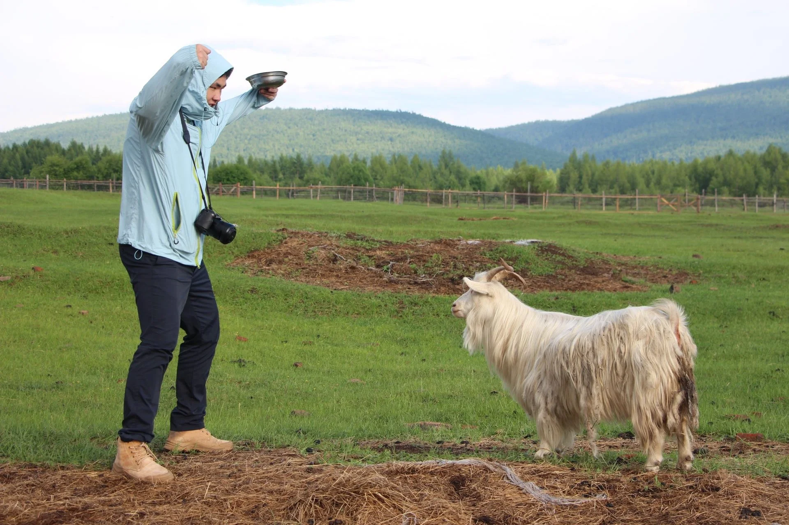

Mathematics · UC Berkeley
Shang Xu
I am a third-year Ph.D. candidate in mathematics at the University of California, Berkeley, advised by David Eisenbud.
My research interests lie in algebraic geometry and representation theory, particularly singularity theory, perverse sheaves, and commutative algebra.
I also explore geometric approaches to attention mechanisms and neural network architectures.

University of California, Berkeley
Evans Hall, Room 1010
Papers & preprints
Listed by year, most recent first
- 2026
- 2026
- 2026
- 2026
- 2023
Background
University of California, Berkeley
Ph.D. in Mathematics · 2024–present
Advisor: David Eisenbud
Nankai University
Mathematics, Chern Class · 2020–2024
Outside mathematics, I enjoy playing the piano, guitar, and table tennis.
Contact
- ygmns@berkeley.edu
- Office
- Evans Hall, Room 1010
UC Berkeley - Office hours
- Tuesday, 2–4 p.m.
Pacific time - Links
- CV · GitHub